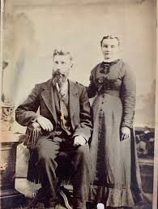

Arrival of the Railroad: Economic Explosion
The arrival of the Utah Southern Railroad on September 27, 1872, was a moment that permanently altered the trajectory of Lehi's history.[12] Before the iron rails reached this corner of the valley, Lehi was a quiet, self-sufficient agricultural village. The steam locomotive changed everything, transforming the community into a regional transportation hub almost overnight.[13]
For nearly a year, Lehi served as the "end of the line" — the temporary terminus where all passengers and freight headed south were funneled through the town.[14] This sudden status as a gateway created an economic explosion. Teamsters and bullwhackers lined the streets, loading wagons with timber and ore to be shipped to the rich mines of the Tintic District and American Fork Canyon.[15] A new business district blossomed in the northern part of town to service the railroad and its patrons, replacing humble adobe homes with grand brick storefronts.[16]

Businessmen and Wealth: Thomas R. Cutler
The economic impact of the railroad on Lehi's economy cannot be understated. Figures like Thomas R. Cutler, who in 1871 established a store near the proposed depot at Lehi Junction, profited from Lehi's new economy. When the Utah Southern Railroad line reached Lehi in 1872, Cutler's business was positioned to thrive off of Lehi's new economic reality.[18]
As commercial business expanded, Cutler became more involved in larger cooperative industrial ventures, like the People's Cooperative and later the Utah Sugar Company, whose mill was near the junction to expedite loading and exporting. His career and influence on Lehi illustrates how the railroad created vast opportunities to transform Lehi from a small agricultural settlement into a growing commercial and industrial center.
Who Was Thomas R. Cutler?
Thomas Robinson Cutler was the primary engine behind Lehi's transformation from a quiet agrarian outpost into a regional industrial powerhouse. Born in Sheffield, England, in 1844, Cutler was the son of a master cutler — a background that instilled in him an early appreciation for precision manufacturing.[19] After a prestigious mercantile apprenticeship in Manchester — then a global epicenter of logistics — Cutler migrated to Utah in 1864.[20]
Cutler's relationship with the railroad was defined by strategic "sagacity." In 1871, using inside knowledge of the Utah Southern Railroad's path, he established a store directly across from the future depot site.[21] This move allowed his business, the People's Cooperative, to capture the massive boom when Lehi became the railroad's southern terminus in 1872. His influence was so pervasive that "Lehi Junction" was officially renamed Cutler Station in his honor.[22]
His personal wealth was mirrored by the scale of his industrial ventures; as General Manager of the Utah Sugar Company, he oversaw the construction of a factory in Lehi that cost $400,000 in 1891 — a massive investment equivalent to over $14.5 million in 2026.[24] This facility moved millions of pounds of freight annually, cementing his legacy as the "Sugar King" of the West.[25]

The People's Store: Cooperative Commerce
By the 1880s, the "semi-independent" spirit of Lehi Junction found its commercial heart in the People's Co-operative Institution. Founded in 1871 under the direction of the LDS Church's School of the Prophets, the "People's Co-op" was part of a larger territorial movement to establish Zion's Co-operative Mercantile Institution (ZCMI) outlets. The goal was simple but radical: to keep capital within the community and ensure that local families could purchase necessities without being exploited by outside "gentile" merchants during a period of intense economic transition.[26]
The institution functioned as the social and economic hub of Lehi. It wasn't just a grocery store; it was a sprawling enterprise that eventually included a clothing department, a shoe factory, and even a butcher shop. For the average resident, the Co-op was where you traded your farm surplus for manufactured goods or "Co-op scrip." This system of internal currency reinforced the communal bonds of the town, ensuring that the wealth generated by Lehi's farmers and railroad workers circulated locally before ever reaching Salt Lake City or the East Coast.[27]
By 1884, the Co-op moved into a grand, two-story brick building on Main Street, signaling that the community had moved past the pioneer subsistence phase into a period of Victorian prosperity.[28]